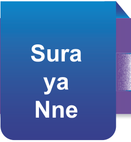
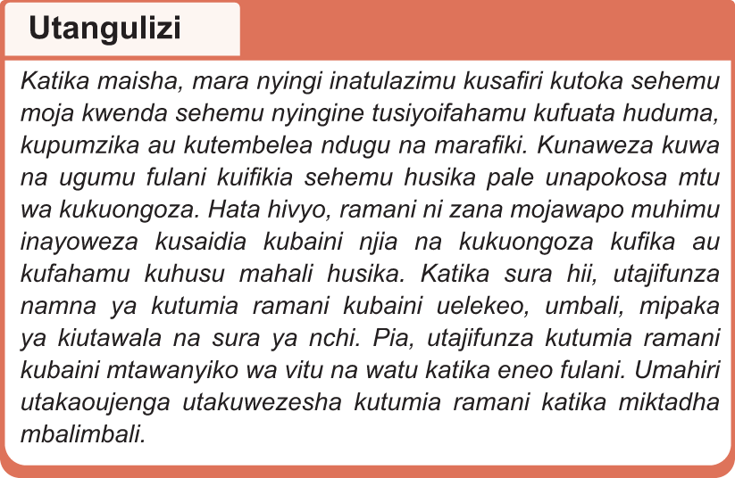

Matumizi ya ramani

Sura ya Nne

Utangulizi
Katika maisha, mara nyingi inatulazimu kusafiri kutoka sehemu moja kwenda sehemu nyingine tusiyoifahamu kufuata huduma, kupumzika au kutembelea ndugu na marafiki. Kunaweza kuwa na ugumu fulani kuifikia sehemu husika pale unapokosa mtu wa kukuongoza. Hata hivyo, ramani ni zana mojawapo muhimu inayoweza kusaidia kubaini njia na kukuongoza kufika au kufahamu kuhusu mahali husika. Katika sura hii, utajifunza namna ya kutumia ramani kubaini uelekeo, umbali, mipaka ya kiutawala na sura ya nchi. Pia, utajifunza kutumia ramani kubaini mtawanyiko wa vitu na watu katika eneo fulani. Umahiri utakaoujenga utakuwezesha kutumia ramani katika miktadha mbalimbali.